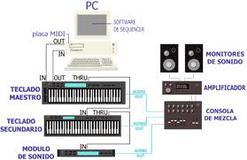

Edición de Audio y video
B. Ficheros MIDI
MIDI ( Musical Instruments Digital Interface ) es
un protocolo desarrollado en 1980 para conectar sintetizadores
musicales a los computadores. A diferencia de los ficheros waveform (ficheros wave), que almacenan en forma digital los sonidos reales,
los ficheros MIDI ( ficheros con extensión MID ) sólo almacenan las
instrucciones necesarias para que un sintetizador genere notas
musicales qué notas se deben tocar y con que instrumentos. El
resultado evidente es que los ficheros MIDI ocupan mucho menos
espacio que los ficheros WAVE. Para que una tarjeta de sonido pueda
leer los ficheros MIDI tiene que incluir un chip que emule un
sintetizador.

Hoy día es normal encontrar tarjetas de sonido de 128 o más canales o instrumentos que pueden ser ejecutados simultáneamente.
Los canales vienen a significar diferentes instrumentos. A más cantidad
de instrumentos, más calidad de sonido MIDI.
de instrumentos, más calidad de sonido MIDI.
Se pueden generar archivos MIDI bien ejecutando una música a través de
un teclado MIDI conectado al rdenador o bien escribiendo la partitura
musical en algunos de los programas diseñados para eso.
Web que explica como converitr ficheros MID en ficheros de audio
Este artículo está licenciado bajo Creative Commons Attribution-NonCommercial-ShareAlike 2.5 License
Jo.R.C.A. 2004 - 2011

Edición de Audio y Video con Software Libre by José Ramón Cerdeira Alonso is licensed under a Creative Commons Reconocimiento-No comercial-Compartir bajo la misma licencia 3.0 España License